ABC-MART TAIWAN | 店員運動企劃
Origin of
the Project
STAFF ON MOVE 是由跨部門與門市夥伴共同發起的企劃，希望透過 ABC-MART 夥伴們的親身體驗，把鞋款機能自然融入趣味生活與戶外情境，用「真實使用者」的角度說故事，而不是傳統的商品廣告。
夥伴主導
由店鋪與總部夥伴自發參與、自主企劃內容方向
生活情境
夜跑、早餐、爬山——鞋款機能融入真實日常
零預算嘗試
前三集皆未動用額外行銷費用，純內容驅動
What We've
Proven
前三集皆由夥伴自發企劃執行，未動用額外行銷資源，純內容驅動成長。
話題導向
拉近距離
以「跑步」生活情境切入，用趣味話題製造討論度與擴散力，讓夥伴與品牌自然連結。
產品導向
形象提升
轉為 PALLADIUM × ABC-MART SMU 獨家商品置入，將流量話題轉化為品牌與商品形象。
擴大經營
提升誘因
規劃跑團經營、球類企劃，並設計店鋪夥伴參與誘因，讓企劃從總部擴大到全體門市。
Activities Archive
Performance
Overview
| 指標 | VOL.01 | VOL.02 | VOL.03 |
|---|---|---|---|
| 觸及帳號 | 4,332 | 3,720 | 3,001 |
| 互動總數 | 201 | 156 | 141 |
| 讚數 | 161 | 133 | 110 |
| 分享次數 | 31 | 14 | 19 |
| 互動帳號數 | 170 | 142 | 118 |
| 新增追蹤 | +4 | +0 | +1 |
亮點觀察
NTU NIGHT RUN
今天下班不回家，來跟 ABC-MART 的夥伴們，收集近期很多人分享的臘腸狗路線！下班不回家，夥伴們一起挑戰網路上超夯的「台大臘腸狗 GPS 路線」，邊跑邊對地圖，原本以為很簡單，結果為了讓這隻臘腸狗長得像一點，大家跑得超費心。不過跟大家一起解鎖新路線的感覺真的很讚，聊著天吹著晚風，連腳步都變輕快了。
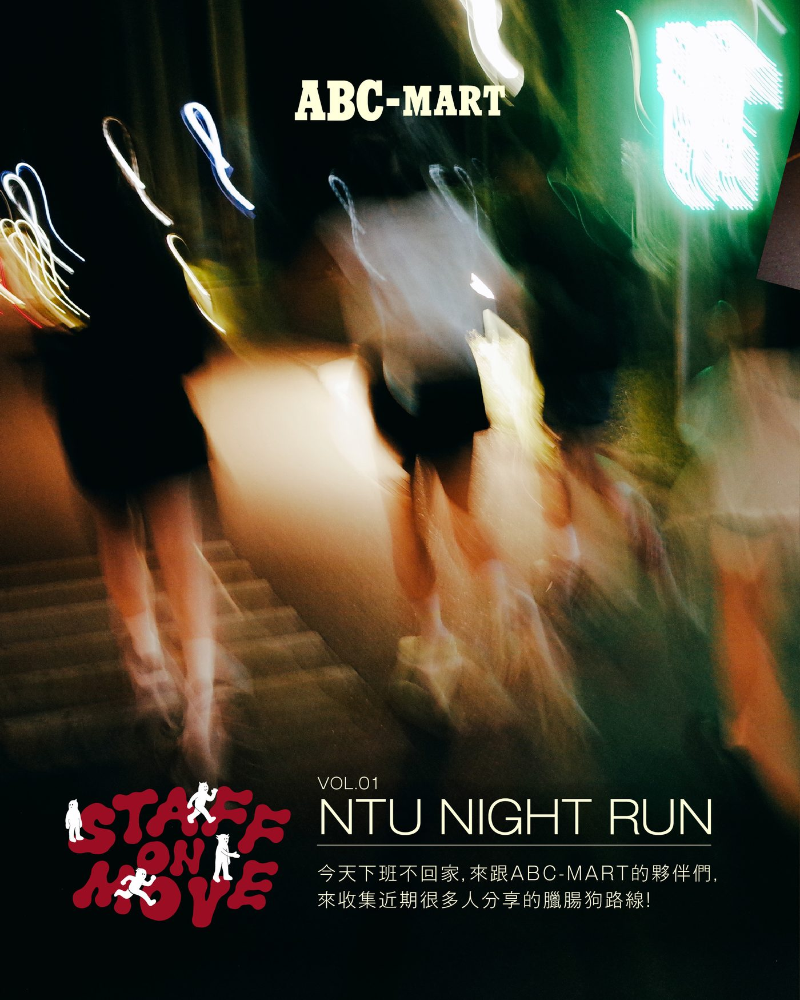
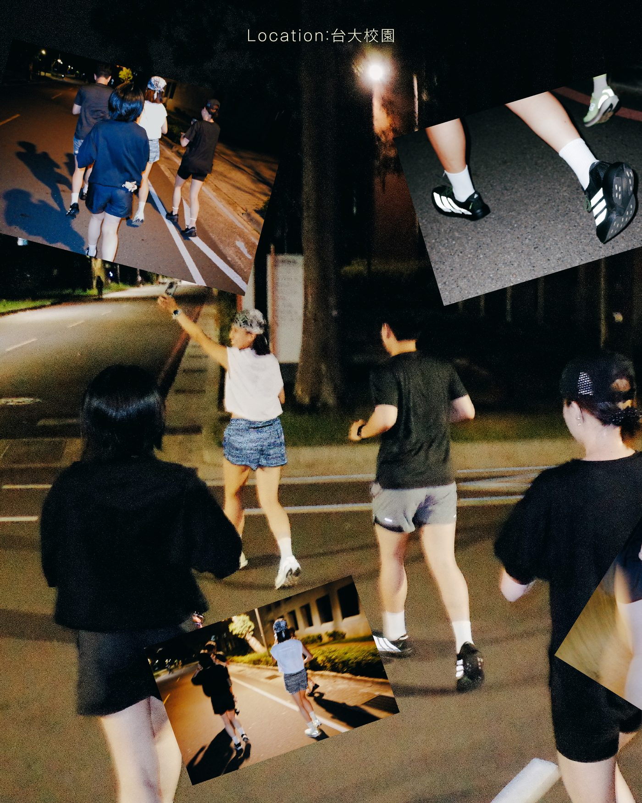
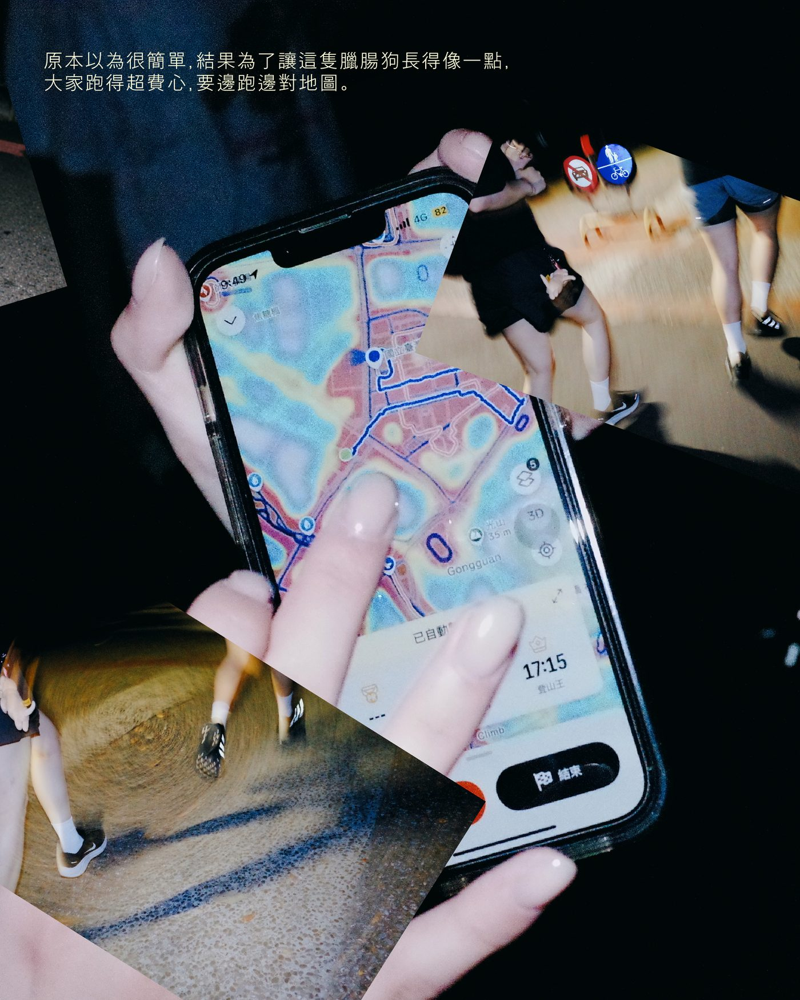
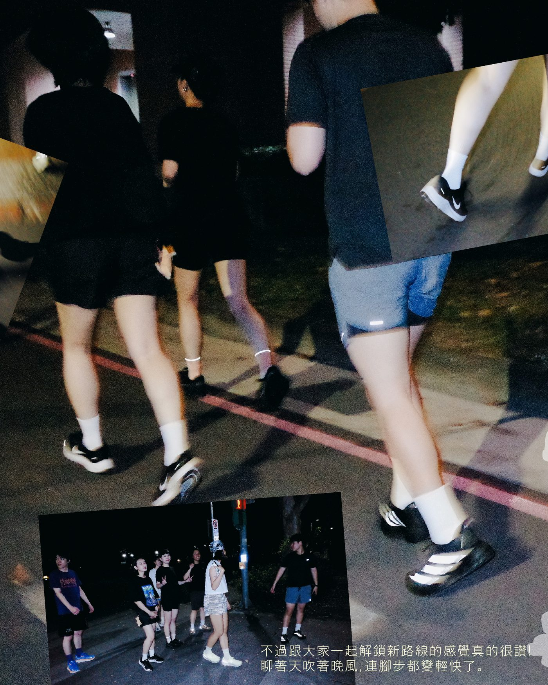
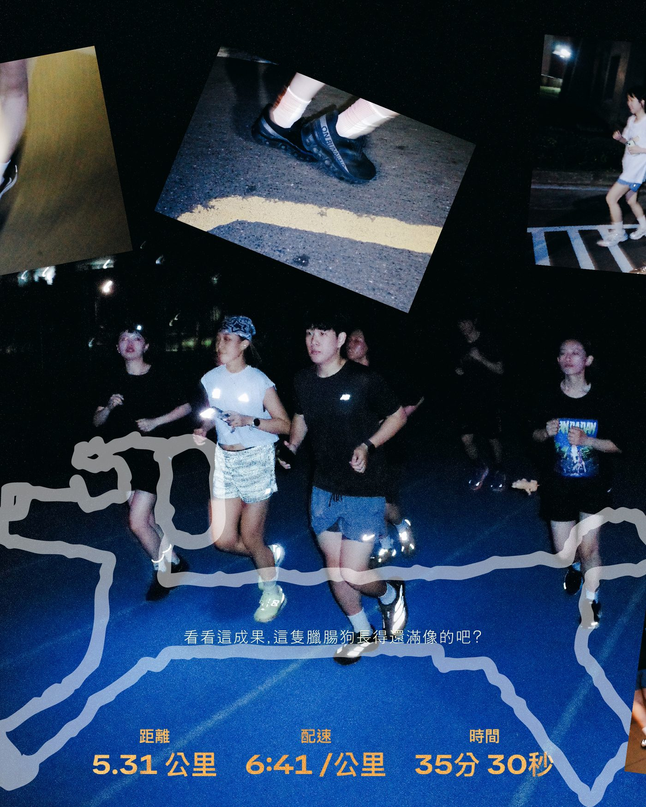
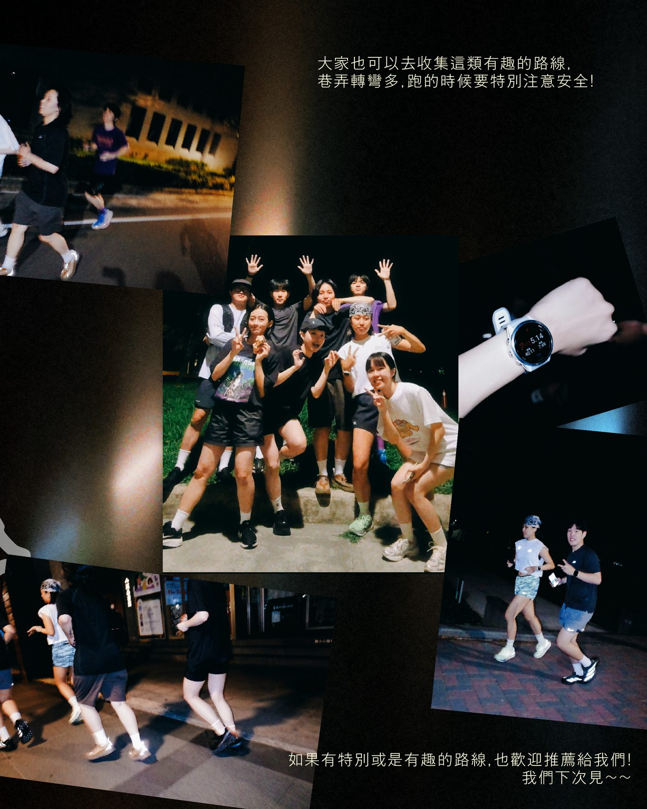
BUTTER RUN
把握好天氣的早晨，跟店員們約在圓山花博公園，一起來跑 BUTTER RUN。事前準備很簡單：在夾鏈袋倒入鮮奶油、加上少許鹽巴、密封後放到背心或背包裡，帶著吐司出發。夏季跑步就是跟太陽的比賽，趁越來越熱之前跑完。跑完打開袋子，奶油真的成形了！抹上吐司，配著早晨的風，就這樣把早餐吃完了。
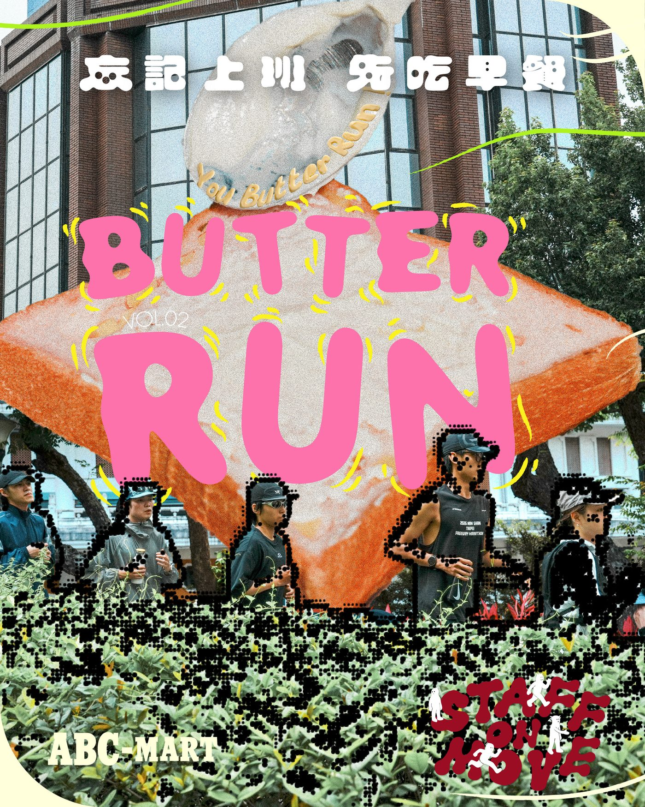
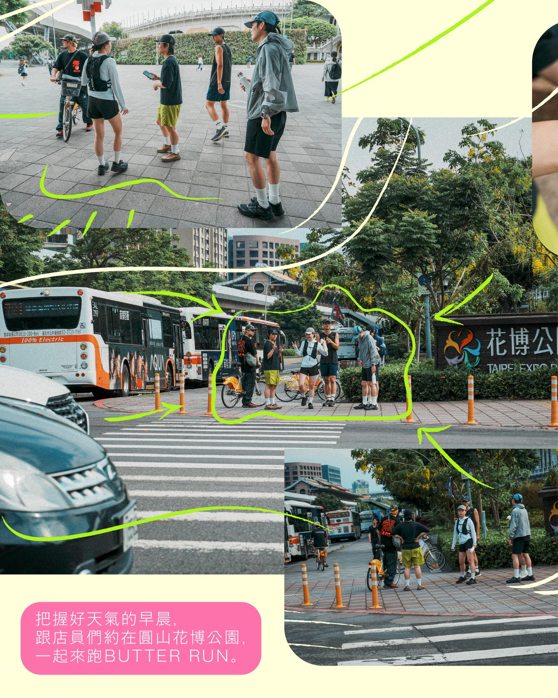
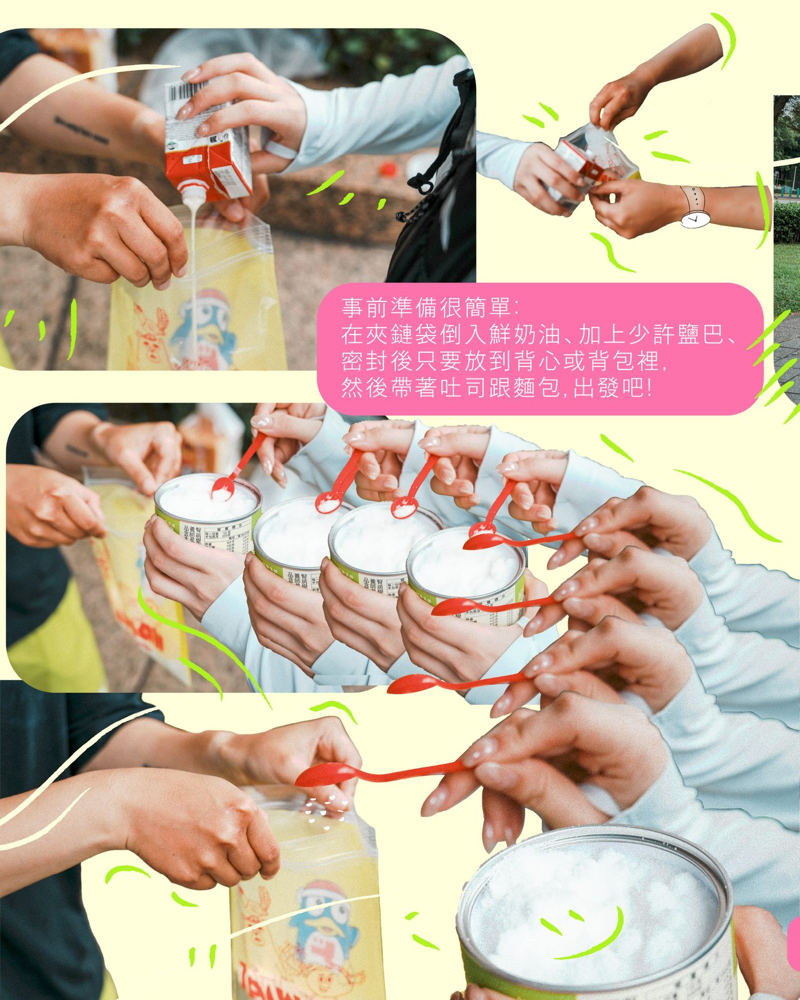
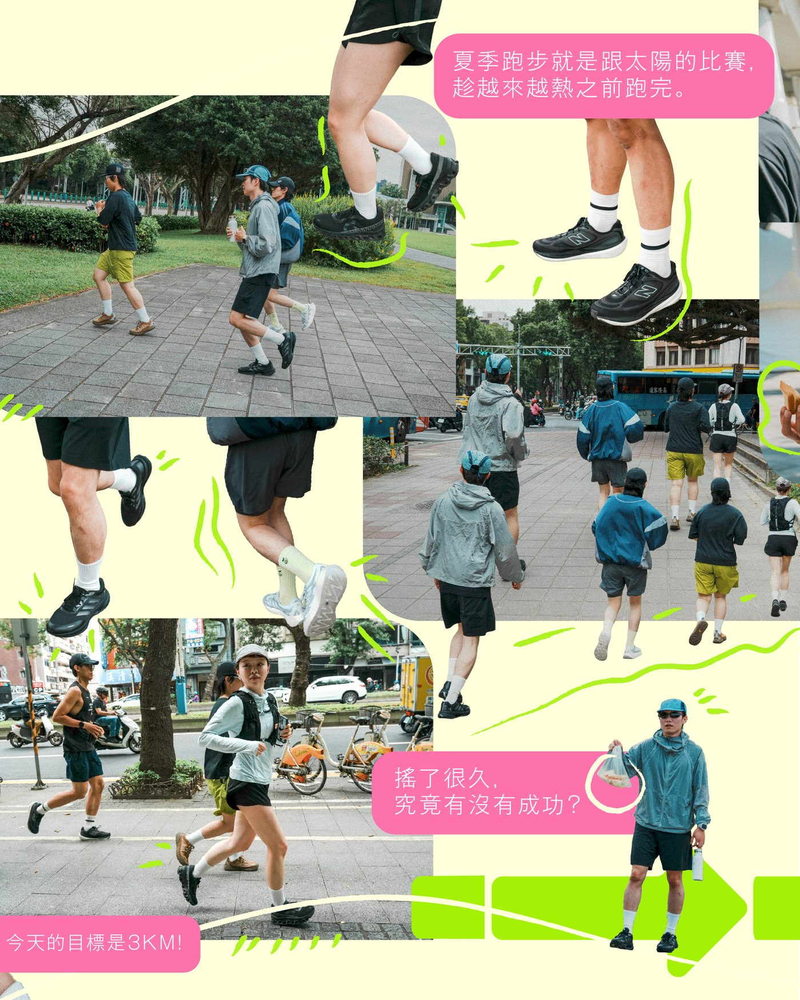
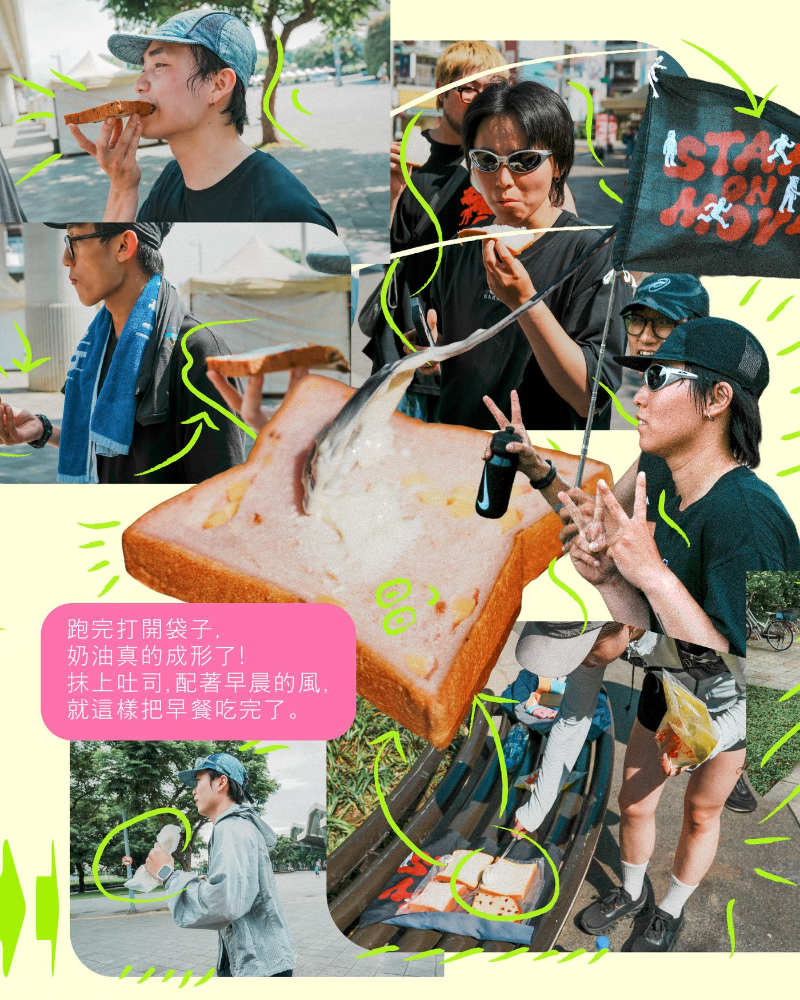
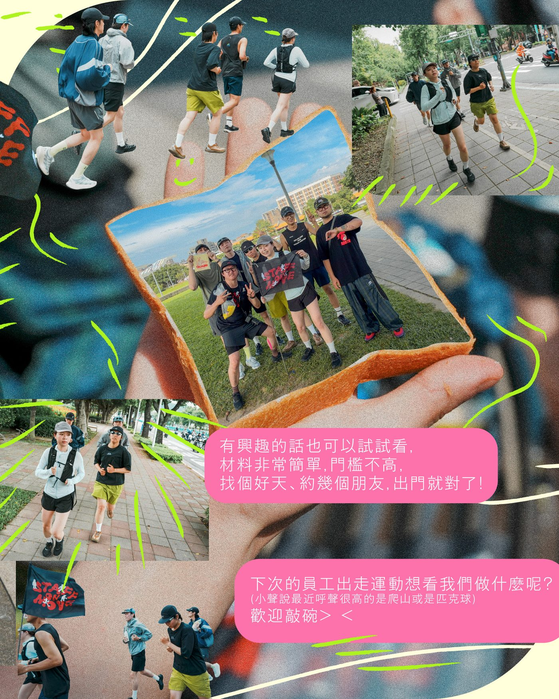